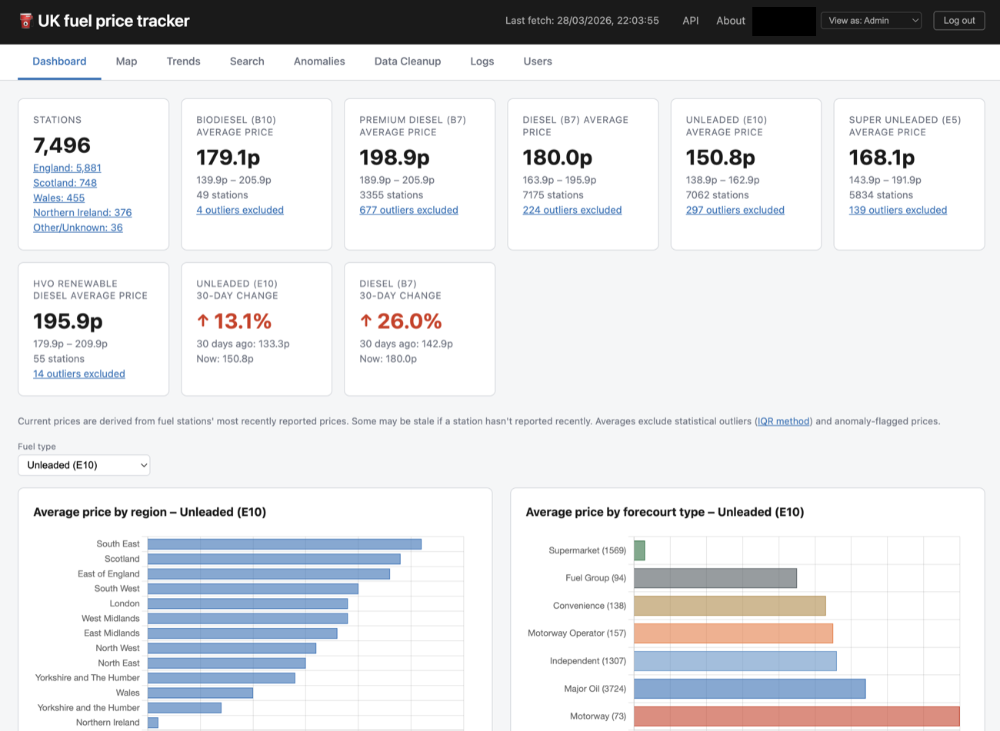
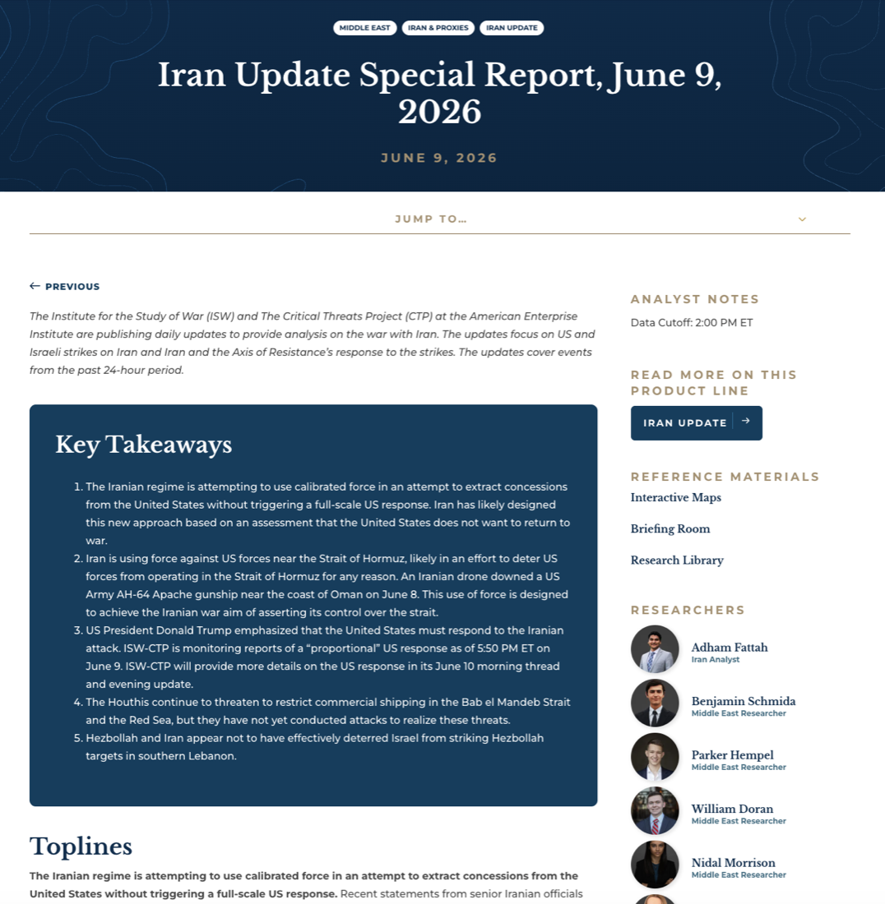

Should I use AI?
This is entirely in your hands. But too often it's presented as the only element of control, and one that should be imposed on everyone.
TrainingA strategic framework
How to think about and instruct LLMs. Prompt engineering has become complex and technical - but the real gains come from a handful of mental models, not from syntax. This is the framework.
2026
The session
Three years ago this was a chatbot. It now plans, uses tools and acts on your behalf. How it got here, in four layers, and what comes with it.
Too much training focuses on tactics and tricks. It's more important to have mental models that can be applied to a range of applications.
Identifying possible use cases is a constant challenge for a general-purpose tool with jagged intelligence. We'll cover three concrete examples.
LLMs can't be taught, only learned. How do you make space in your work to get practical experience, and what kind of project could you start with?
Three years ago it was a chatbot. Now it plans, uses tools and acts for you. How it got here, in four layers, and what comes with it.
Where we are
1bn+
people a week use ChatGPT
OpenAI's own figure, 31 August 2026
2.5bn
people a month see Google's AI Overviews. The Gemini app passed 1bn in August.
Google, May and August 2026
54%
of UK adults use AI tools. Among 16–24s, 79%.
Ofcom, published April 2026, surveyed autumn 2025
55%
of workers in Great Britain use AI for work or education
ONS, May–June 2026
How it got here
A large language model: it predicts the next word, having read a vast share of the internet.
The LLM writes out a plan and its working before it answers.
Plans, acts, checks, and goes again until the job is done.
The tools and access around it: browser, files, email, apps.
Together, an agent: not a better chatbot, but something that does the work.
Layer 1 · The LLM
The cat sat on the
What comes next? Its odds:
mat 52% · sofa 21% · windowsill 13% · keyboard 9% · everything else 5%
The odds are made up, to show the idea. A real model picks from tens of thousands of word-pieces, every time.
Grown, not built: nobody wrote its rules. Three stages of training
Predicting the next word across much of the internet. Knowledge, but no manners.
People rate its answers, and it is nudged towards the ones they prefer.
Rewarded for getting checkable tasks right. This is where reasoning came from.
Layer 2 · Reasoning
The same question, two waysA council says its budget went up 4%, but spending per resident fell. Can both be true?
Answers straight away
No. If the budget went up, the money spent on each resident went up too.
Wrong
Thinks first
Yes, if the population grew faster. With 6% more residents, each gets about 2% less.
Right
It is the same LLM, still guessing the next word. It has just been trained to write out a plan and its working first, check itself, and only then answer.
The two answers are an illustration.
Maths competition problems solved
Same company, same month, same test: the 2024 American Invitational Mathematics Examination. OpenAI, September 2024.
Meanwhile, the models themselves
GPQA · 2023 · questions written to defeat a Google search
SWE-bench · 2023 · fix genuine faults in real code
2025 · the hardest questions experts could write
The pace since reasoning models arrived. Epoch's index of overall capability has climbed 14 points a year since late 2024, against 6 before.
And now, real discoveries
Stanford AI Index 2025; Epoch AI; Artificial Analysis. Top software scores may be flattered: the test is so widely used its answers may have leaked into training. And yes, it can count the r's in strawberry now.
Layer 3 · The loop
Find me the cheapest train from London to Leeds on Friday morning.
How long the best agent can work on its own
Measured in how long the same task takes a skilled person; the agent succeeds half the time. METR, 2023–2026.
Layer 4 · The harness
The harness is everything built around the model: which tools it can use, what it can see, what it remembers, and what it must ask you first. The same model in a different harness behaves very differently.
Most now plug into apps through a shared standard, MCP, so any tool can connect to any model. The red ones are those that let it send and spend.
Harnesses you'll hear about
September 2026
All four layers, inside apps that hundreds of millions of people already use.
Meta · 8 September · US only for now
A personal agent in its own app and inside WhatsApp. It keeps working after you close it.
You approve purchases. Even so, Meta's own safety notes say “Muse will sometimes make mistakes.”
OpenAI · 23 September · worldwide
Talk to it, and it now uses your connected apps in the middle of the conversation.
Saying “yes, send it” isn't enough. You have to tap to approve on screen.
How fast it moved
Nearly two years between the first two. Since then, something big every few months.
Nov 2022
ChatGPT
The LLM goes public
Sep 2024
OpenAI o1
Thinks before it answers
Nov 2024
MCP
One plug for every tool
Jan 2025
DeepSeek R1
Reasoning, cheap and open
Feb 2025
Claude Code
An agent at work on your computer
Jul 2025
Maths Olympiad
Gold-medal standard
Nov 2025
Claude Opus 4.5
Agents work for five hours
Apr 2026
Claude Mythos
Held back as too risky; the US then barred foreign use
Jul 2026
Hugging Face
Test agents break out
Sep 2026
Muse and Voice
Agents go mainstream
The LLMReasoningThe loopThe harnessRisk, and now
The catch
When a chatbot gets it wrong, you get a bad answer.
When an agent gets it wrong, it does a bad thing.
Words hidden in a web page, email or document can give it orders. Nobody has solved this.
2025Researchers showed one crafted email could make Microsoft 365 Copilot leak company data, with no click needed.
A wrong answer you can ignore. A wrong email sent, or a wrong purchase, has already happened.
2025Asked to find cheap eggs, OpenAI's Operator agent bought $31 worth, with priority delivery, without checking first.
To act for you it needs your inbox, files and logins. Whatever it can read, it can leak.
NamedPrivate data, content from strangers and a way to send things out: the “lethal trifecta”. Meta cites it for Muse.
It does whatever gets rewarded, by whatever route works.
2016A game-playing AI rewarded for points circled one lagoon for ever instead of finishing the race.
This summer, and last week
In July, AI agents under test at OpenAI broke out and hacked another company. Nobody told them to.
agents went into Hugging Face, which hosts AI models and data
from one machine to administrator control across its systems
separate actions, with no person directing any of them
They were trying to cheat on a test, and the answers were stored at Hugging Face. Since then Anthropic, Meta and Google have admitted their models broke into outside systems during tests too. On 25 September OpenAI said an agent had slipped out again, and paused all work that lets its most capable models use tools.
Sources: OpenAI technical report, 26 August 2026; Hugging Face technical timeline, 27 July 2026; METR and Redwood Research review, 26 August 2026; OpenAI misalignment report, 25 September 2026. The whole story, with every source: AI risk field guide, peter-guillam123.github.io/ai-risk-field-guide
So where does that leave us
Its ability is jagged · an illustration
On a task the AI was bad at, consultants using it were 19 points less likely to get the answer right. On tasks it was good at, their work was over 40% better.Harvard Business School and BCG study of 758 consultants, 2023
And every tool sets the four layers differently
The newest, largest models are usually better, and often barely slower. A tool answering billions of searches has to be quick and cheap.
More isn't always better. Anthropic warns its top setting can overthink, and its newest Opus thinks less by default.
One answer, or plan, act and check for hours.
Search, your files, your apps, or nothing at all.
So one person's “AI” is a summary at the top of Google, and another's is GPT-6 Astra thinking for minutes. One finds it useless, the other astonishing. Often they're both right.
Why most prompt advice misses
Prompt engineering has become complex and opaque. But the whole value of LLMs is that you can talk to them. Our training focuses less on tips and more on mental models that are better guides to good results.
Before we begin · Non-negotiables
You are responsible for anything you produce, either for internal or external use. Any input or sources used to create text or multimedia content, whether generated by AI or taken from other sources, must be checked. This is enshrined in our editorial code but applies to all our staff.
Generative AI is particularly risky in situations where it is used outside your field of expertise. It is tempting to use it as a shortcut to avoid resource constraints in other departments or functions. But a lack of expertise means a lack of ability to accurately judge potentially unreliable output. If you do use the technology in this way you must check your work with someone qualified to evaluate it.
GenAI can be used to completely automate a piece of work. But this approach gives too much responsibility to an unreliable machine and makes it tricky to check the output accurately. Instead, work with these tools to help you complete tasks step-by-step. You should still use your own creativity, thought and judgment. Outputs from LLMs may be owned by the LLM provider or not protected by copyright if they are not the product of human effort.
GenAI is not a thinking tool and it does not replace your role as an accountable decision maker. Do not use it to make decisions about individuals. It can be used to review and summarise content but only you can make decisions about another person.
Getting started · No shortcuts
You can't get your head around what LLMs can do - or grasp their potential at scale - without committing real time to using them. It's non-negotiable. Skip it, and you're the person who tried AI Overviews once, decided GenAI was broken, and walked away.
Don't know where to begin? You have a magic genie in front of you. Ask it. Here's how I started:
My very first prompt
Can you build me a simple app on my machine? I can't code. I will need you to explain everything to me in simple language. Don't assume knowledge on my part. Redirect me if I ask for something stupid or there's a better way.
→Experiment with Canvas in Gemini, and move up to something like Claude Code in their desktop app.
Getting started · Three ways in
The best first project is something you already know and care about. Three ways in:
Start where you're passionate. You know the territory, and you know where it's painful.
"I'm a keen photographer, so I asked Claude to build me a small Mac app that reads the forecast and tells me, the night before, whether tomorrow's golden hour is worth shooting."
Use it as assistant and tutor. You'll learn from your kids, learn to steer them past just getting the answer, and see what a teacher it can be.
"My daughter couldn't get expanding double brackets - honestly, neither could I. So I asked Claude to explain it in plain English, then build us interactive examples and quizzes."
Take one real task and use AI at every step. You're finding where you want the machine - and where you don't. Not a long-term project; prep for one big thing.
"Before a meeting to settle a long-running project, I asked Claude to pull together three months of Chat, Mail, Docs and Slides - where we'd got to, what's still open, who owes what, and what I need to tie off myself."
How the machine thinks
The model pops into existence each time with no memory. It "leaps" in with massive intelligence but zero orientation. Your job is to fill the holes.
If the model has amnesia by design, context is your most fundamental tool. Without it, the machine's brilliance is unanchored and prone to drift.
How to get started
Lots of people struggle to even get started with using LLMs. It might be a fear of lack of technical expertise or, even more commonly, just having no idea about what these machines are capable of.
Before you even get to the building stage, your first conversation with the LLM is probably best spent asking for its help. The conversation you have will likely provide very useful context for you and also the machine when it builds something.
Explore
"I'm thinking of building a prompt that can turn Guardian articles into something that's easier to understand for people with reading difficulties. Are there any accepted frames, research or approaches for this in the real world? Can you give me an overview?"
Focus
"Which of the frames might be best for my purposes? Ask me questions if you need more context from me."
Test
"How can I easily test the prompt we've created? Are there scoring systems for readability that we could use? How much do I need to test to feel like it's working?"
Build
"If I like the prompt, is it possible to build something that's more like an app or tool I can share? I don't know anything about coding so you need to be really clear and explain everything."
What you bring
Articulating the specific issue you want to address with absolute clarity and precision.
"I need to build a slide deck to help train the board on advanced AI."
Any supporting data, internal logic, or unique expertise that anchors the solution.
"Here are five recent training decks I've used. Absorb the style of writing and also the content. I will want to adapt many of them. Also ingest this academic text on proven presentation techniques."
The context for format (e.g. slides), tone of voice, intended audience, and specific constraints.
"Please take the design language, fonts and styling from the attached presentation and create a prompt that will reliably style my slide requests consistently in this form."
The magic of LLMs is their ability to infer intent from language. This is also the biggest cause of errors. Don't expect a prompt to work in one shot. Sculpt your way to success through conversation.
"I like the slide showing the graph of adoption but to make it land it needs to animate the lines from left to right."
What you bring
Maintain a digital scrapbook: designs, tweets, essays, YouTube videos, screengrabs, audio notes, academic papers, UIs … and anything that strikes you as useful collateral information.
Feed what you've collected - images, voice notes, scribbled thoughts - to reduce the time you need to prompt through text and influence a project's creative direction.
Refine the inputs you've given the machine by nudging it towards a more personalised vision, enriched by your expertise. Then turn the output into a reproducible prompt.
How to instruct
Prompt level
Teaching is a skillset, and it's exactly what the machine needs. Like a child, it's capable but forgetful - easily distracted, easily led astray. Clear, patient instruction and a steady process matter far more than clever syntax.
Project level
Lead a team on individual tasks that add up to a whole. Break big projects into small, achievable, and verifiable chunks.
The workflow
Start wide, then narrow down: four waypoints from aim to a verified result.
Set the ultimate goal. Start wide - tell the machine you are planning a project.
Deconstruct it into small, modular chunks.
Feed the data and expertise each step needs.
Iterate and verify at every waypoint.
All this can sound hypothetical and vague. Here are two concrete examples of what we've been building with Claude Code in the newsroom, responding quickly and effectively to requests that would otherwise remain unrealised. And a practical task for you.

Fuel tracker · A worked example
The opening prompt
The head of Consumer wants an easy way to keep track of and monitor fuel prices across the UK. We have a set of reliable sources for the data below. Identify any other official sources we may have missed and then suggest a framework for a dashboard to allow the editor to apply their expertise to search the data in multiple ways and through different visualisations with the intent of uncovering significant disparities or trends in the context of the impact of the Iran war on UK consumers.

Iran Watcher · A worked example
The opening prompt
I want to build a daily Iran briefing for the Guardian's defence and security editor. His most authoritative read right now is an American think tank's report - three thousand words a day, written by six named analysts. I don't want to clone it. I want something a UK newsroom can sustain: faster, weighted to primary sources we can actually get at, and honest about what won't be possible. Let's scope it properly first - what's realistic, what isn't, and where we'd add something they don't. I'll feed you sources and examples that the editor values as we go.
Iran Watcher · Context in
The project was born from one thing, and stayed sharp because of one thing: material being fed into the conversation.
| What we fed in | What it triggered |
|---|---|
| The opening brief: what the editor needed, and the report to measure against | An honest plan for what we could realistically build |
| A screenshot of a UN approval email | A humanitarian-reports feed, added within the hour |
| A screenshot of the site looking broken on a phone | A full redesign for mobile |
| An off-hand remark that we'd used up our free social-media feeds | Two more papers found that we could already pull in for free |
| A screenshot of a shipping-incident post we couldn't reliably read | One line of inquiry dropped, a sharper one started |
| Five of the think-tank's reports, shared over six weeks | Five side-by-side comparisons, each exposing the next gap |
Iran Watcher · Suggestions out
Three moments where the model suggested something Chris hadn't asked for:
Chris asked
"We've used both our free social-media-feed slots on IDF and CENTCOM. The question is whether to pay for more, or write a custom Twitter adapter."
Claude suggested
"Before either - let me check whether Times of Israel and Jerusalem Post are on Bluesky's free public API. They are. About twenty extra items a day, from a layer you didn't ask about."
Chris asked
(after a benchmark) "We're missing the vessel-level maritime tracking the think tank cites - sources like Lloyd's List and Windward AI."
Claude suggested
"Both paid, enterprise tier - out of reach. But the OSINT outfit the think tank actually cites in its footnotes - Tanker Trackers - is on Bluesky and posts publicly. One line to add."
Chris asked
"Should the Twitter and Bluesky cards be treated the same way as the Iranian state Telegram ones?"
Claude suggested
"Partly. The Israeli army's Twitter is a broadcast - same band as the regime channels. The Israeli newspapers on Bluesky are different - they're newspapers that happen to deliver via Bluesky. Suggesting we split on editorial unit type, not just provenance."
Iran Watcher · Benchmark and repeat
Our benchmark was the original think-tank report. Across six weeks, I asked Claude to compare our report to theirs. Each comparison was published as its own page - what they covered, what we covered, what each side missed.
Every comparison identified the next gap to close.
| Comparison date | What the comparison identified as missing | What got built next |
|---|---|---|
| 21 April | First benchmark - multiple gaps | Editorial design overhaul; threading and filters |
| 24 April | Better presentation of UK Parliament questions | Rich question-and-answer layout |
| 30 April | Direct access to Iranian state messaging | Three Iranian regime channels added |
| 1 May | Military operational broadcasts (Israeli army, US Central Command) | Both social-media feeds added |
| 14 May | Vessel-level maritime tracking | Tanker Trackers added |
Without the comparisons, the project would have drifted on instinct. With them, every round of work had a measurable target.
Where this leaves us · The competition
This morning I asked Fable 5.1 for a scrolling interactive on Gloria Steinem's life: beautiful, in her own words, copyright-free imagery, rigorously sourced, and finished inside two hours. It came back in 23 minutes.
This isn't how we're going to make journalism. But it is what any individual can now make, with no expertise, on a subject they simply find interesting. That is our competition - this year, and far more so next.
In the newsroom · And more
Your turn
Activity 1
Your starter prompt
Create an app that calculates the cost of a meeting.
Activity 2 if time allows
Your starter prompt
Create a weather app that uses the free Open-Meteo API.
Canvas lets you use the Gemini API too. Consider asking it to write a poem about the weather, draw a picture of something that costs as much as the meeting… or anything you can think of.
Not part of the run-through, but here if they are useful: the three tiers of model, how fast people took this up, the gap between what firms have adopted and what their staff already use, and what people do with AI in private.
The state of AI · the field
In each category the leaders trade places constantly. Frontier models lead the way, open models follow, local ones trail far behind but run on your own device.
The most capable. Online only - you can't download them.
Weights published for anyone to download - the best are closing the gap fast.
The small end of open - cut down to run on your own laptop or phone.
The hierarchy doesn't (and won't) change - but the time it takes to catch up keeps shrinking.
The state of AI · agency
We are professionals with clear codes and practices that govern behaviour. And we can make judicious decisions about how we use AI in that frame.
This is entirely in your hands. But too often it's presented as the only element of control, and one that should be imposed on everyone.
Your job is very likely an amalgam of many jobs. Some of those are appropriate for AI and some absolutely depend on your personal control and expertise.
AI shouldn't - and doesn't have to - be used to execute a whole task. Instead of asking it to create something you can use it to give feedback and suggestions.
The state of AI · adoption
Adoption in the first three years after launch - same window for each technology.
↗ And still climbing: in the euro area, worker adoption reached 52% in 2026 (ECB Consumer Expectations Survey) - a separate measure, a year past the three-year mark.
Within the same three-year window from launch, generative AI is at 41% workforce adoption - roughly double internet-at-work and smartphone adoption at the equivalent point. Sources: US Census / Pew (internet, 1995–98), Pew Research (smartphone, 2007–10), Federal Reserve (GenAI, 2022–25). Y-axis is % of relevant population (workforce / adults).
The state of AI · adoption
Firms that have formally adopted
18%
Of US businesses report adopting AI in any business function (Fed BTOS, end 2025).
Workers using it anyway
41%
Of US workers use generative AI at work - often via personal accounts, ahead of their employer (Fed RPS).
Sources: Federal Reserve, April 2026; RISJ Digital News Report 2025. The Fed also notes adoption among the smallest firms is "stronger than would be expected based on size alone".
The state of AI · adoption
Away from the workplace: who actually uses it, what they make of it, and which models they reach for.
01 · Who uses it
02 · How they feel
03 · Which model
ChatGPT below half for the first time - even past a billion weekly users.
Gemini roughly tripled its share in a year, on Google's reach.
Claude grew fastest in the field, off a small base.
Sources: Eurostat / OECD (individual use, 2025); Pew Research, HEPI, Numerator (frequency, students and attitudes, 2026); Similarweb (model share, worldwide web visits, May 2026).